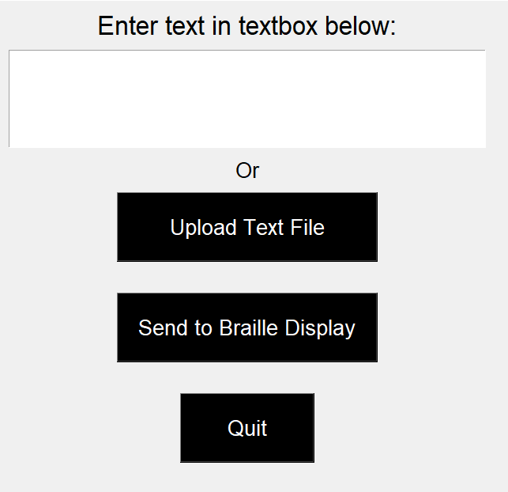
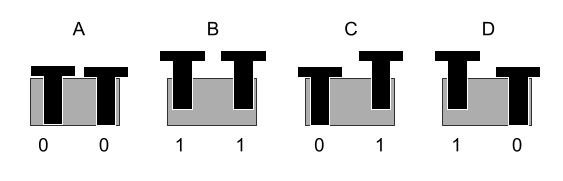
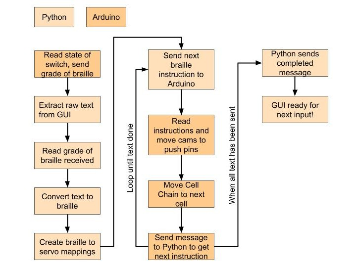

Software and Firmware
See the 1s and 0s to make everything move and come together and view the source code!
Firmware
Our Arduino Uno runs the firmware which controls and reads data from our stepper motor, our servos, and the braille grade switch. It has a few major components: a portion that captures data from the software interface, a portion that moves the servos and stepper motor, and a portion that sends information back to the software interface (braille 1 vs. braille 2 settings from the switch, whether the text to pin movements have finished).
The firmware is modular in design, allowing for reusable functions. For example, the instructions for reading input from the user interface via serial is encapsulated in our recvWithStartEndMarkers() function. This allows us to reuse the function when we need to collect information from the software interface, such as the braille mappings or confirmation that the user pressed the 'send to braille display' button.
Servo and Stepper Motor Movement
Our servo movement is encapsulated in the moveServos() function. For each braille mapping sent to the Arduino from the software program, the Arduino responds by calling the moveServos() function, which moves each servo to the appropriate position to activate the necessary pins.
One challenge we faced was that each servo had different levels of positioning and movement precision, which forced us to code movement uniquely for each servo. For example, moving a servo to hit the right-most pin on a braille cell meant sending an instruction to move 80 degrees for servo 3, but only 64 degrees for servo 2. We compensated for this difference by using switch statements to give each servo different angle instructions adjusted to their level of position and sensitivity.
The stepper motor is set to move at 1/16 micro-steps per full step to create a more smooth and precise Cell Chain movement. We conducted substantive testing to calibrate our stepper motor and found that approximately 1100 micro-steps consistently moved one cell forward; this is reflected in our code, where we set our belt to move 1100 micro-steps for each process.
All of our source code can be found on our Github repository. The main script used in our final product is sprint3DriveCode.ino, and the supporting script used to calibrate our stepper motor and servo motor positions is beltCalibration.ino.
Requirements and Dependencies
- Arduino Uno, or equivalent
- Arduino standard libraries
- Arduino Servo, Stepper, and Wire libraries
Software
The software contains the following major components: a graphical user interface that takes text input and allows the user to interact with the display, a text to braille instructions converter, and serial communication with the Arduino via Serial.Graphical User Interface (GUI)
To create the graphical user interface, we used the built-in Python Tkinter library. A minimal GUI was created, as we wanted as much of the user interaction to be physical as possible. The user can either copy or paste text or upload a .txt file. Clicking the "Upload Text File" button launches the default operating system file explorer.
{kind=link}
If we had more time during our last sprint, we would have redesigned our user interface to be compatible with a screen reader. We built it using the Tkinter Python library and Tkinter is not screen reader accessible. We would either use a different Python library, such as WxPython, or create a simple web application to improve accessibility.
Text To Braille Conversion
After extracting the text from the GUI, we convert the raw English text to braille based on the grade received from the physical system. For grade 1 braille, we use our own implementation, while for grade 2 braille we leverage the Pybrl library. After translating, we package the text into a form to streamline sending the data to the Arduino. Since there are only 4 possible states each row can be in, we encode the state of each row into a letter ('A' 'B' 'C' or 'D'), and package these into a list. For example, a space (all pins low, or 0 in braille) is encoded as 'AAA'. This allows us to send instructions for each braille cell in just three bytes.
{kind=link}
Serial Communication
Once the GUI is launched, Python constantly communicates with the Arduino via Serial. Basic Serial communication, such as send and read, encapsulated within the textReader class. This allows us to send the braille instruction for the cams (such as 'AAA' for a space) and easily know when the Arduino is ready for the next braille instruction. A diagram outlining the serial communication process is below.
{kind=link}
Requirements and Dependencies
- Python 3
- Pybrl
- Tkinter
- Serial